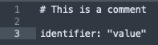
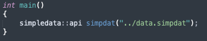
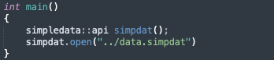
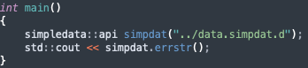
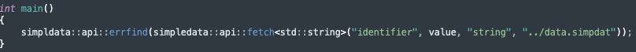

Syntax
SimpleData syntax is quite simple.
A hashtag appends a comment.
Identifiers must be unique and are used as the variable name, seperated by a colon.
The value can either be a string (represented by a double quote on each end), an integer, a floating point integer, a boolean (true/false), a single
character (represented by a single quote on each end), or simply null (either uppercase or lowercase).
Below is an example of the above statements.

Another thing worth mentioning is that identifiers cannot have spaces between them. This will be explained in the guidelines section.
Also, there are some reserved identifiers, namely "boolean", "bool", "float", "int", "integer", "string", "char", "null", and "NULL".
This will also be explained in the guidelines section linked above.
API
Currently there are two versions of the API: one written in Python3 and another written in C++17.
The C++ SimpleData API is written using C++17.
As time progresses, I hope that I will manage to support more languages, but currently this is what we have.
Both APIs do the same things and have mostly the same functions, however there are some differences to be noted.
C++
The API revolves around a class, which can either be used as an object or as static functions.
The main functions presented to the programmer are update() and fetch().
The update() function updates an identifier's value, and the fetch() function fetches an identifier's value.
update() takes three arguments: the identifier to find, the value to replace that identifier's value with, and a type.
fetch() also takes three arguemnts: the identifier to find, where to store the identifier's value, and a type.
fetch() and update()'s last arguments governs how the resulting value is transformed, if at all.
Templates are used for both functions, which decides each function's second argument.
The class talked about earlier can be instantiated like so:

The constructor's only argument is the name of the file to work with.
It is optional, and the open() function can be used instead.

Thankfully, you are not stuck with working with the same file for the entirety of that object's existence.
open() can be used whenever needed to change the working file of an object.
Please note that update() and fetch() will lock up whenever an invalid file is opened.
update() and fetch() both return integers. Those integers mean stuff, and the meanings can be checked using either
errstr() or errfind().
errstr() takes no arguments and simply returns the description of the last returned integer of that object.
errfind() takes an integer and returns it's description. The function was designed to be used by update() and fetch()'s non-OOP counterparts.
Below is an example of the two functions being used:


The non-OOP versions of update() and fetch() are extremely similar to the OOP versions apart from two points:
In the non-OOP update(), the first point is true. However, with fetch() the "type" parameter is just before it.
There is also a version() function which simply returns the current version of the API.
Python
The Python API is written in Python3 and shares most of the same concepts and functions from the original C++ API apart from a few minor things.
First of all, since Python is a statically-typed language it can't have template arguments. This gives the "type" argument a better reason to be used as it still defines what is returned from the fetch() function.
Also, just for more convenience, update() also requires a "type" argument to specify the type of the new value.
errstr() and errfind() still exist and work the same way, however the static functions are located outside of the simpledata class so that Python
does not mix them up with the non-static functions.
Below is an example of the new static fetch() function in Python:

As you can see, all of the static functions are now appended with "simpledata_".
It is recommended to read both APIs source code to get a full understanding of the functionality of each.
Guidelines
This section is the explanation section. I will cover how I designed everything to work and be used and explain my reasons for things.
I designed the SimpleData variables to be an echo of programming language variables.
Then that would allow me to make a variable in my .simpdat file and another local variable in my program with the same name.
Then I would presumably fetch that variable from the .simpdat file and put it's value into my program's variable.
To me, that is quite sensible. Because then I know that if I have a variable that has a spot in a SimpleData file, I can just fetch the required data instead of worrying whether I have the right data or not since both go by the same name.
This is also the reason for the restricted identifier names. In C++ at least, "bool", "float", "char", "int", and "NULL" can't be used as variable names as they are used for other things.
The static functions exist simply for convenience. The logic is that if someone wants to access only one or two variables in a file, why should they have to instantiate a class only to delete it a few moments later?
Another thing you might find odd is the existence of the "type" parameter for fetch() in the C++ API.
It is only used so that constexpr does not screw up the conversions and spit out something stupid.
Another thing worth mentioning is that I designed SimpleData files to be written by humans and then changed by computer programs.
If I had designed it for computers, I wouldn't have bothered with adding comments.